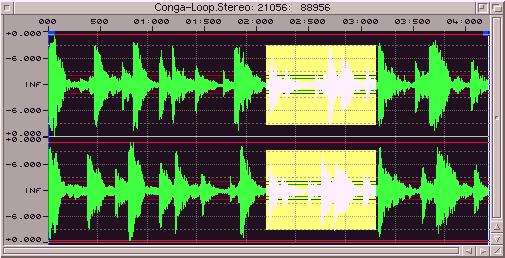

the window :
When a sample has been loaded or generated, it is then displayed within its own
window. Size and position can be changed via the windows gadgets. Several lines are
drawn to help reading positions and levels of the sample. Additional lines can be
drawn to display the maximum, average and real (acoustical) amplitude.
If 'Loop' is activated and start and repeat lengths are set, vertical lines
with boxes attached to the top will visualize the looping part. If some range is
selected (marked), this is shown by an highlighted filled box.
In the window title bar SoundFX displays the samples name, playback rate and
length. While playing a sample you see the play-position there.
actions inside the window :
When moving the mouse around the mouse pointer will change its shape to indicate
what action can be performed.
The loop lines can be moved by clicking and holding the left mouse-button onto
the box and moving the mouse.
Clicking down the left mouse-button inside the sample window but outside of the
loop boxes or a previously marked area will start a new marking operation. When
clicking inside a mark (not near the borders), it can be moved around, while
holding the left mouse-button. When clicking inside a mark at the borders, the
range can be modified into that direction. Here is a 'picture' to make it more
clearly (anyway the mouse pointer shape should clearly show the available
action) :
|
|
1 change left and upper border
2 change upper border
3 change right and upper border
4 change left border
5 move around
6 change right border
7 change left and lower border
8 change lower border
9 change right and lower border
|
This area (or range) can be magnified, cut or copied. If an area was magnified,
moving the slider at the bottom or right of the window, will move the display
through the sample data. This area will be continuously updated while sliding.
While modifying loops, marking ranges and zooming areas SoundFX displays information
about start, end and length in the status bar.
If you have zoomed you view more than 1:1 and selected "Trace" in the range-toolbar,
it is possible to draw directly into the sample data while left mouse-button is pressed.
With this function you can manually remove errors (cracks). The sample display will be
refreshed when you release the mouse-button.
|